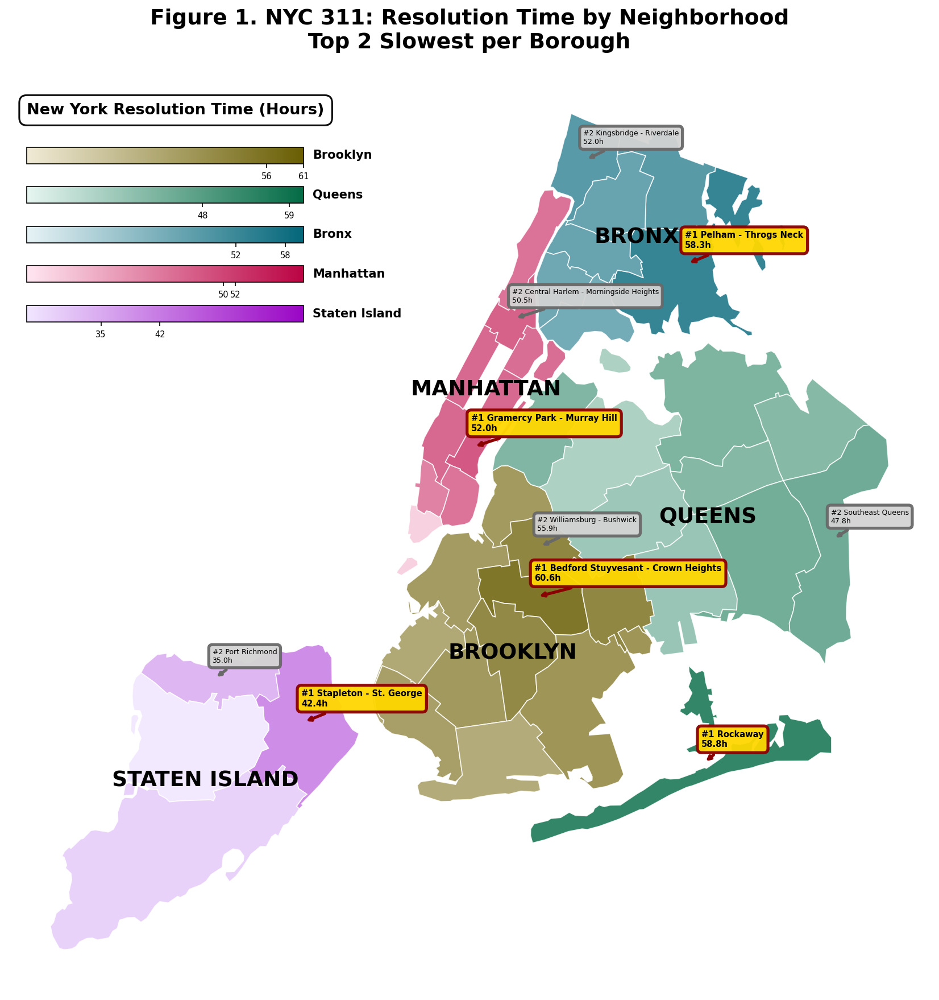
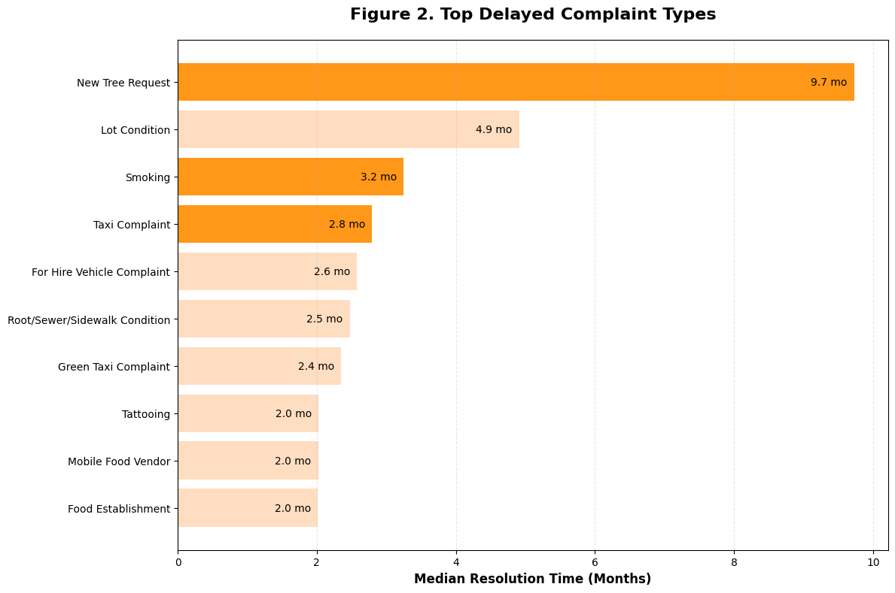
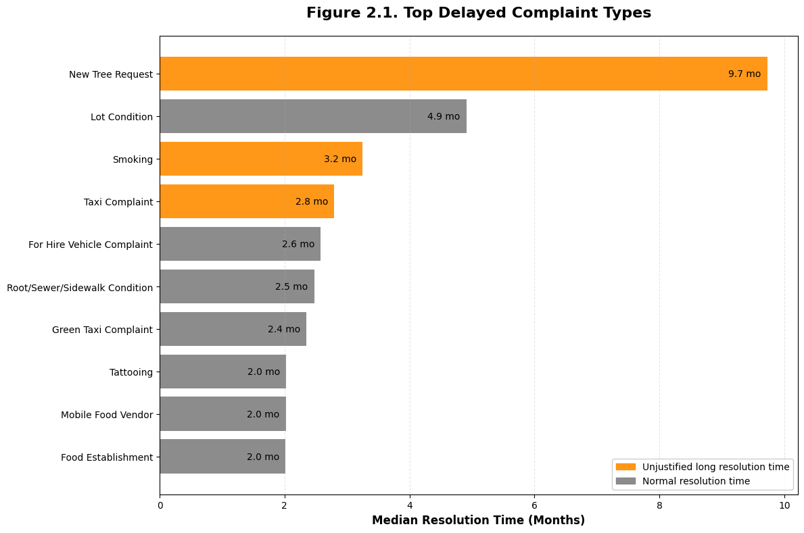
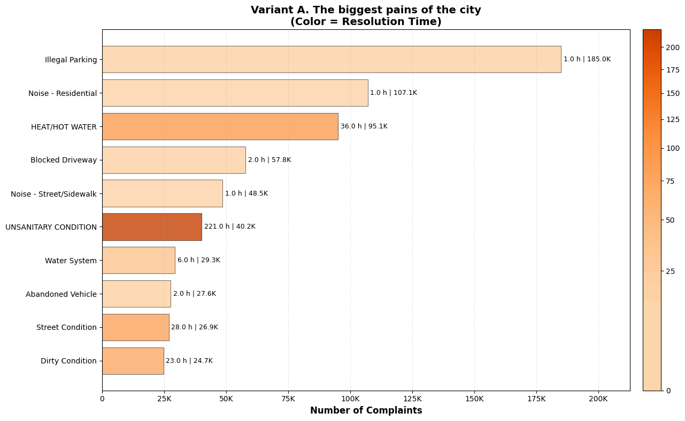
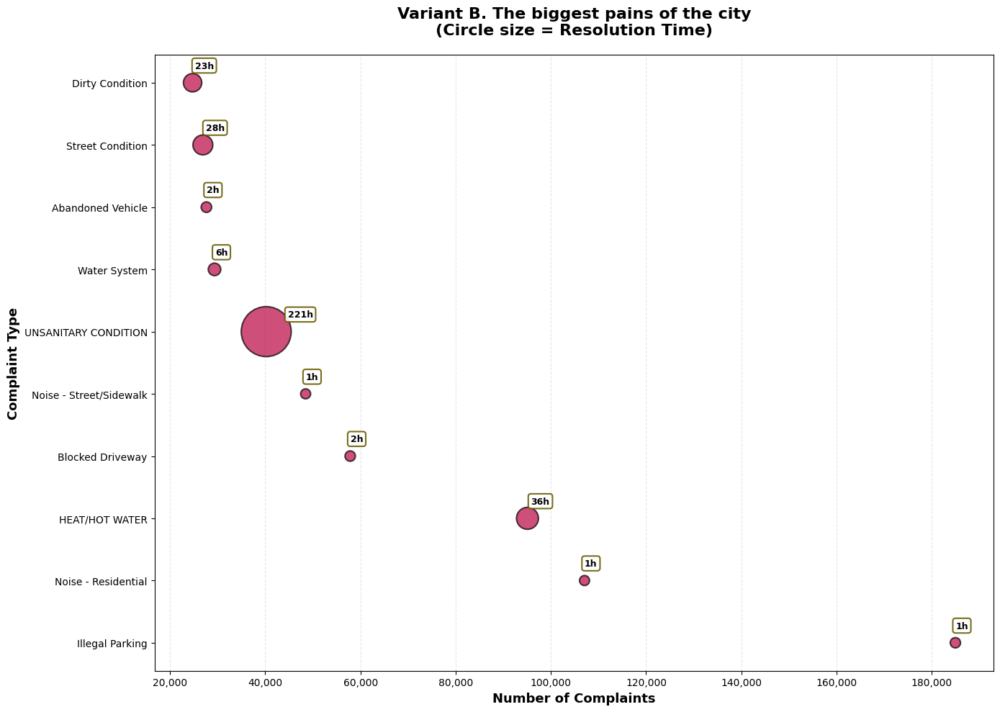

Load
Import NYC 311 complaint records, StreetEasy median rent data, UHF ZIP mappings, and manual corrections for neighborhood normalization.
Data Engineering • Geospatial Analysis • Static Report Design
A portfolio case study built around a modular Python pipeline that collects, cleans, integrates, and visualizes NYC 311 service request data together with neighborhood rent data to surface where city response delays hit hardest.
Overview
This project started as a university data workflow assignment and evolved into a full case study about public service responsiveness in New York City. The core system pulls complaint data from the NYC 311 API, standardizes neighborhoods with UHF mappings, merges the result with rental market data, and exports an analysis- ready snapshot for downstream geospatial reporting.
The final report focuses on a simple question with real civic weight: where do residents wait longest for issues to be resolved, and which categories of complaints create the biggest operational pain for the city?
Method
Import NYC 311 complaint records, StreetEasy median rent data, UHF ZIP mappings, and manual corrections for neighborhood normalization.
Remove duplicate and incomplete records, standardize date fields, normalize text, and prepare both datasets for consistent joins.
Engineer time features, compute resolution time, map ZIP codes to UHF neighborhoods, and aggregate complaint patterns by place and period.
Join complaint and rent data into a single export used by the visualization module and validate merge quality before final output.
Python 3.12, pandas, numpy, matplotlib, seaborn, requests, pytest, Jupyter.
Installable package with a CLI entry point plus a separate GDV reporting module.
The integrated dataset is exported as data/data_snapshot_for_gdv.csv for analysis.
Engineering Quality
The repository separates data loading, cleaning, transformation, and integration into dedicated modules instead of collapsing everything into notebook cells.
A package-level CLI makes the workflow reproducible and easier to rerun when the source data changes.
The test suite covers orchestration, component boundaries, merge behavior, export logic, and dataset summary expectations.
The GDV module documents the evolution from v1 to v3 visualizations, which makes the visual design process visible instead of incidental.
Project Snapshot
Technical Skills
Built controlled import flows for NYC Open Data and balanced data volume using sampling strategies suitable for development and repeated runs.
Applied null analysis, duplicate handling, date validation, and location cleanup to turn raw complaint records into reliable analytical input.
Mapped ZIP codes to UHF neighborhoods and used manual mapping rules to resolve ambiguous district labels before integration.
Engineered time-based metrics including median resolution duration and complaint distributions by type and location for decision-ready analysis.
Structured the workflow as a Python package with a CLI entry point to improve reproducibility and reduce notebook-only dependency.
Implemented module and pipeline tests to validate joins, exports, and key transformation boundaries under realistic data conditions.
Storyline
This story follows a clear path: first, we map where response times are slowest, then we show which complaint types remain unresolved the longest, and finally we compare high-volume issues with high-impact delays. Together, these visuals reveal not only operational workload, but also inequality in how quickly residents across New York City receive help.
Act 1: Geography of Inequality
The map highlights the top two slowest neighborhoods in each borough. Brooklyn and Queens contain several zones in the 50 to 70 hour range, while Staten Island is materially faster. For residents, this means the same issue can be resolved much faster or slower depending on address.
This is the central equity question of the project: city voice is available to all, but response speed is not uniformly distributed.

Act 2: The Long Tail of Delay
The delayed-type charts show extreme outliers: New Tree Request reaches 9.7 months, while several other categories remain open for multiple months. This is less about one bad queue and more about cross-department bottlenecks, coordination complexity, and uneven resource allocation.
In practical terms, low-frequency categories can become policy blind spots where issues accumulate until they become expensive or hazardous.


Act 3: Volume Is Not Urgency
High-volume categories such as Illegal Parking and Noise are handled quickly and create a visible impression of responsiveness. But a second view reveals a different reality: health-related categories like UNSANITARY CONDITION and HEAT/HOT WATER remain open much longer, often for days.
The key takeaway is structural: the system appears optimized for repetitive, routinized tasks, not for vulnerable cases where delay has a higher human cost.

